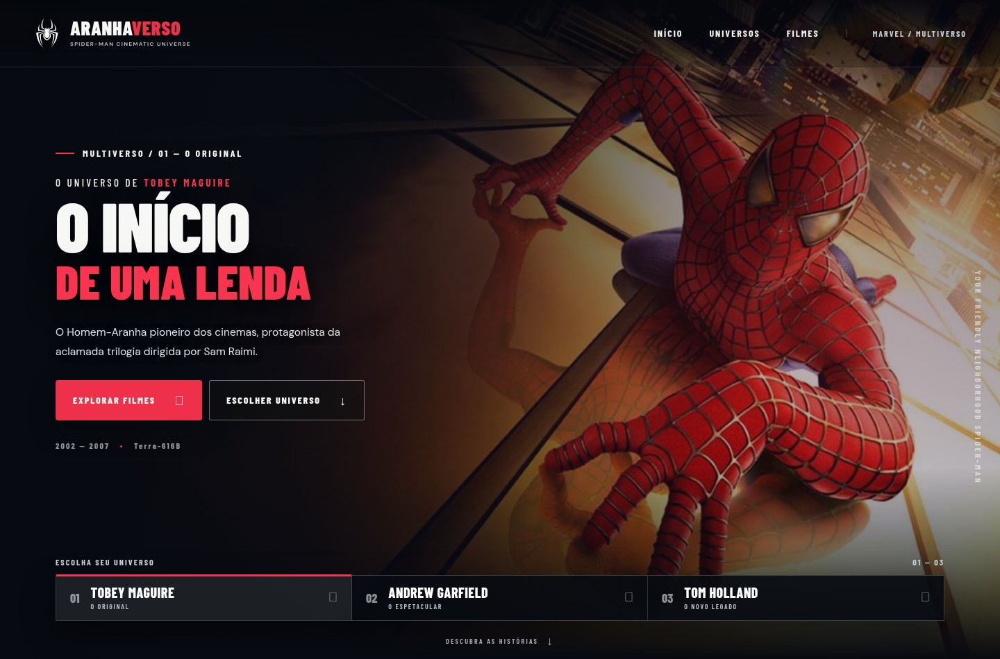
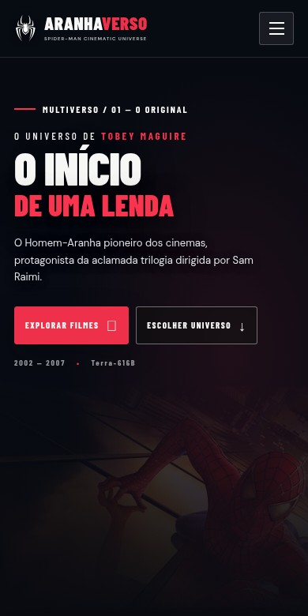

Aranhaverso.
Três Homens-Aranha. Uma experiência cinematográfica.
AranhaversoInterface web


O desafio
Explorar animação, composição e identidade visual sem perder a clareza ao navegar entre diferentes universos cinematográficos.
A construção
Uma apresentação cinematográfica com alternância entre protagonistas, catálogo de filmes e páginas de detalhes com sinopse, trailers e galerias. A aplicação organiza a navegação em PHP com arquitetura MVC.
O resultado
O projeto reúne estudo visual e desenvolvimento web em uma experiência navegável. O repositório contém o código e as instruções para executar a aplicação com seu banco próprio.
Disponível para novos projetos